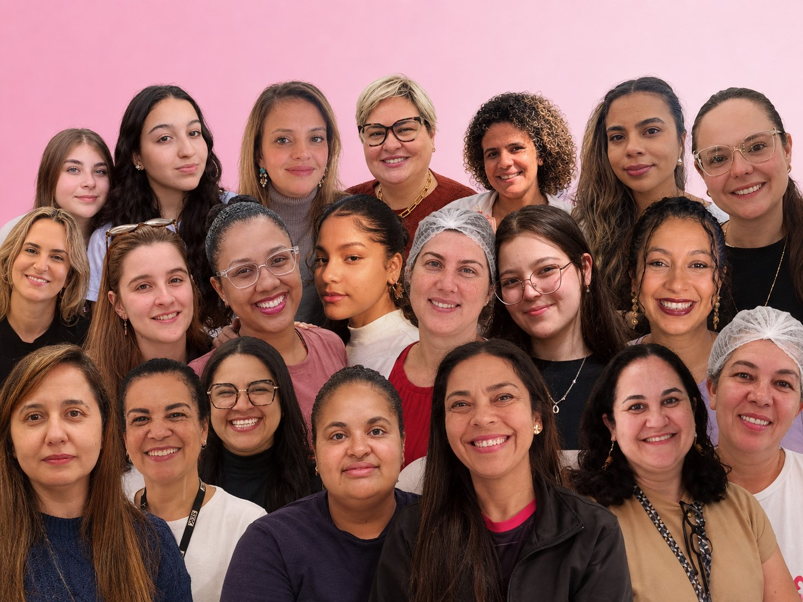
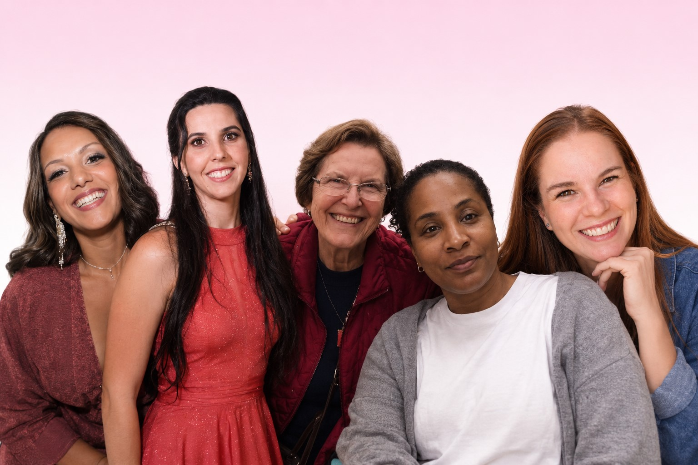

Comunidade Escolar
Mulheres da Escola
Conheça as educadoras, funcionárias e lideranças que transformam o dia a dia no SESI / SENAI.
Explorar histórias →
Selecione onde deseja explorar as trajetórias inspiradoras:

Conheça as educadoras, funcionárias e lideranças que transformam o dia a dia no SESI / SENAI.
Explorar histórias →
Descubra as trajetórias de força, superação e dedicação das familiares dos participantes do projeto.
Explorar histórias →